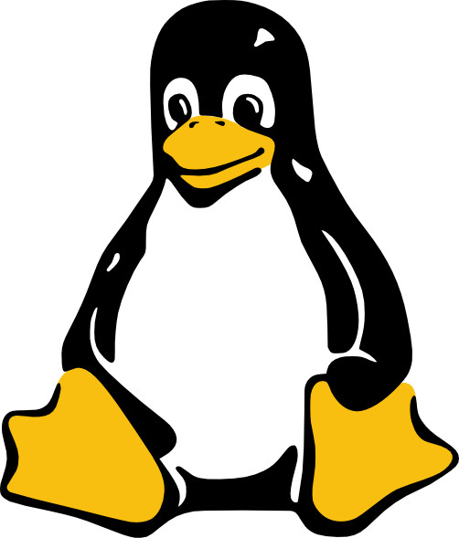

- Při koupi programu běžně získává uživatel oprávnění provozovat program na jednom počítači. V případech hromadného využití programu (firmy, školy ...) stačí koupit jedno balení programu a k němu vícenásobnou licenci pro další počítače, která bývá cenově výhodnější variantou.
- Uživatel nemůže koupit program jako celek se všemi právy k němu, ale může získat pouze licenci (oprávnění) k jeho užívání. Z toho plyne, že nesmí žádným způsobem upravovat toto dílo, pokud k tomu autor nedá svůj výslovný souhlas. Licence je většinou nepřenosná, a proto není možné tuto licenci někomu dalšímu prodat nebo darovat.
- Často se používá rovněž označení proprietární software nebo také software s uzavřeným kódem (closed source). Jeho autor upravuje licencí (typicky EULA - End-User-License-Agreement) či jiným způsobem možnosti jeho používání. K takovému software nejsou zpravidla k dispozici volně zdrojové kódy či v nich nelze svobodně dělat úpravy a výsledné dílo distribuovat. Je šířen za úplatu a bývá omezen počet instalací, přenositelnost licence či právo modifikace produktu.
- (Original Equipment Manufacturer = původní výrobce zařízení). Touto zkratkou se označují výrobky, které jsou určeny k zabudování jako komponenty (součásti) do jiných zařízení. Jedná se například o programy, které jsou nabízeny pouze současně s hardware za sníženou cenu.
- Demoverze jsou „ostré“ programy, které mají zablokované některé funkce, často ukládání souboru na disk a tisk. Dodávají se zdarma, nebo za malý poplatek. V demoverzi je možné vyzkoušet funkčnost programu před jeho koupí.
- verze většinou umožňují plnohodnotnou práci včetně ukládání i tisku, ale jen po určitou dobu. Po uplynutí této doby program nelze spustit ani znovu nainstalovat.
- S programem může uživatel pracovat a po určité době je povinnen zaslat jeho autorovi uvedený poplatek. Poté smí program legálně užívat a autor k němu často pošle stručný manuál, případně i novou verzi programu.
- Doslova lze název této skupiny programů přeložit jako volné zboží. Program je možné používat a rozšiřovat zdarma, požaduje se pouze dodržování autorských práv. Nesmí se zahrnovat do komerčně šířených programů a nesmí být změněn. Někdy je jako freeware šířen i velmi kvalitní program a po jeho hromadném rozšíření se z něj může stát program šířený komerčně.
PUBLIC DOMAIN
- Je to rozsáhlá oblast programů k volnému užití.
Tyto programy lze používat, volně šířit i upravovat.
Autoři se vzdávají některých svých práv k programu a nechají uživatele s ním nakládat podle libostí.
SVOBODNÝ SOFTWARE A GNU/LINUX
V současnosti vystupuje do popředí tzv. svobodný software (free software, nezaměňovat s freeware) šířený většinou pod licencí Open Source (nejčastěji GPL, viz níže).
Ten se stává alternativou pro často finančně náročné komerční programy.
Myšlenku svobodného softwaru formuloval v polovině 80. let minulého století Richard M. Stallman, do té doby programátor na univerzitě v USA. Stallman založil projekt, jehož cílem bylo vytvořit svobodný unixový operační systém. Projekt byl pojmenován jako projekt GNU (GNU is Not Unix).
Systém GNU brzy obsahoval všechny důležité komponenty s výjimkou jádra.
|
|

|
OPEN SOURCE A LICENCE GPL
Open Source znamená doslova otevřený zdroj. Takové programy musí být vždy šířeny i s uvedením zdrojových textů, takže každý (kdo má patřičné znalosti) může přesně zjistit, jak takový program funguje.
Každý ho také může vylepšit, opravit v něm chybu, použít ho ve svém programu, vždy však musí takový produkt opět distribuovat jako Open Source.
Přesné podmínky pak stanovuje licence GPL (General Public Licence - všeobecná veřejná licence).
Nejrozšířenější takovou licencí je GNU/GPL (GNU General Public Licence). Prvními vývojáři byli nadšenci z prostředí především amerických univerzit, studenti i zaměstnanci, a dodnes je akademická půda silnou základnou Open Source.
Mnoho komerčních firem platí své vývojáře za práci na Open Source a přispívá finančně celé komunitě.
Vlády některých zemí (např. Číny a Japonska) sledují se znepokojením dominanci firmy Microsoft na poli softwaru a podporují vysokými částkami vývoj volně šiřitelného softwaru, který pak mohou jejich občané používat bez nákupu drahých komerčních systémů.